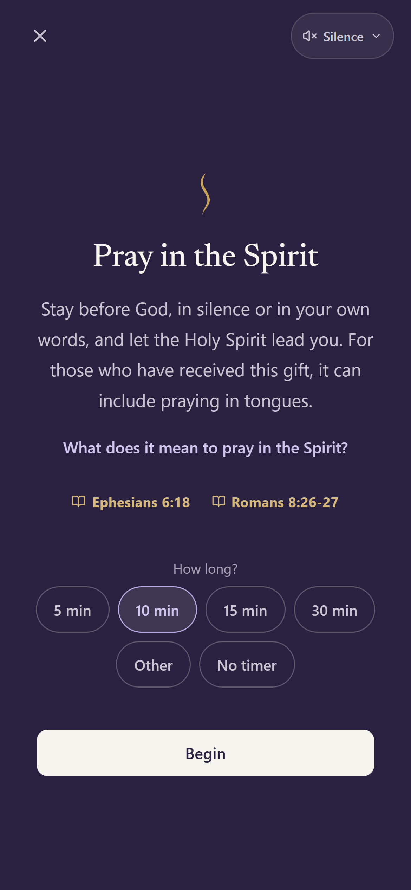
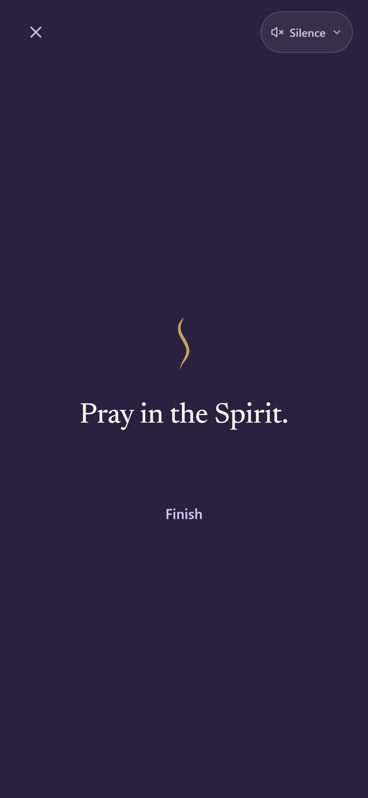
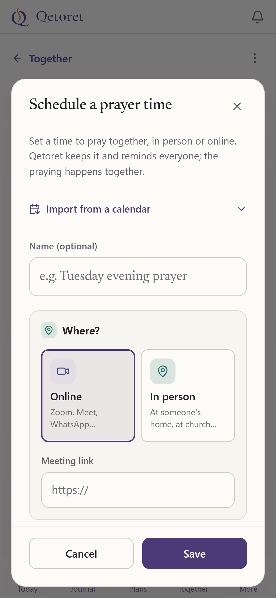
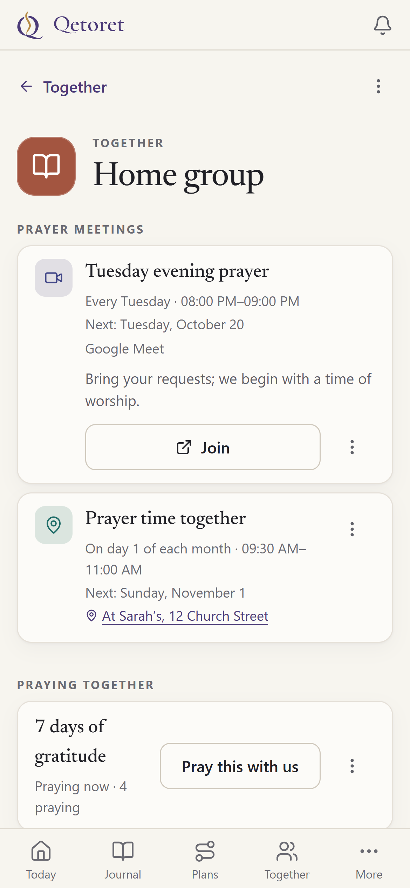
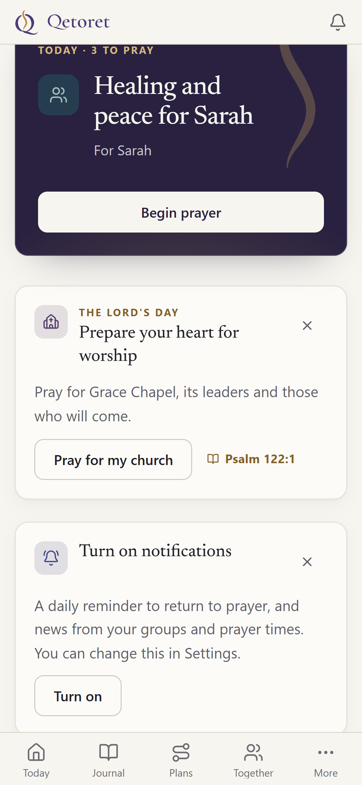
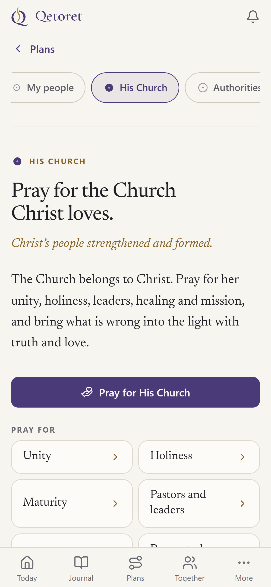
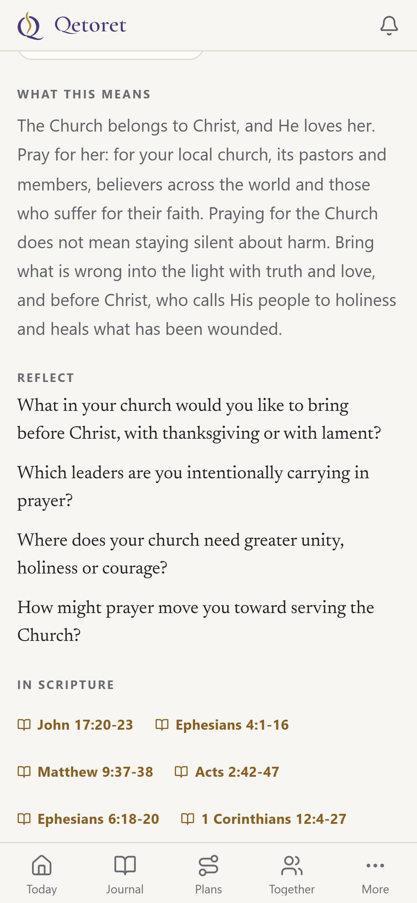

One quiet space to pray freely, with or without words.
Choose a length or no timer; the screen stays on.
Schedule a prayer time for your group, in person or online.
Members get a reminder 15 minutes before and can join the call.
Name your local church, kept private and encrypted.
On Sunday, Today helps you prepare for worship.
Each theme opens with its meaning, a reflection and Scripture, all on one page.







Get the update
Let your prayers rise.